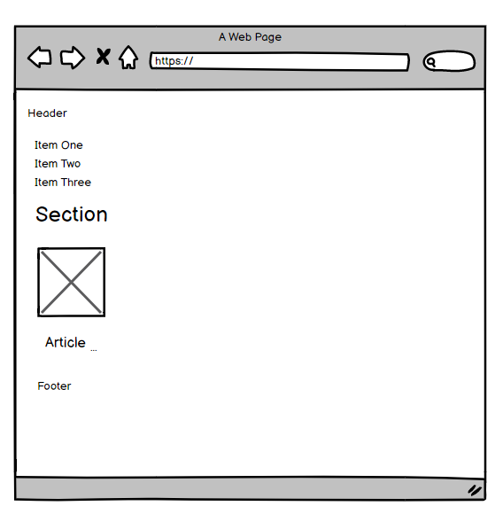

El proposito de este sitio web es, mediante una explicación sencilla cómo funcionan las etiquetas HTML, las listas numeradas y las no numeradas
al igual que el funcionamiento de los enlaces.

Semantica
HTML es un lenguaje utilizado para generar contenido visual codificando en forma de etiquetas; La semántica general que aplica
es que la apertura de una etiqueta de por si lleva una etiqueta de cierre, que es la misma etiqueta de apertura solo que con un "/".
Sin embargo, como toda regla tiene su excepción, existen algunas que no necesariamente llevan esto, como por el ejemplo la etiqueta br,
que solo se le permite colocar etiqueta de apertura.
Las listas son parte fundamental HTML, existen etiquetas ordenadas y sin orden: ul: unordered list, ol: ordered list. Estas etiquetas
junto con algo de código CSS hacen menús navegables muy poderosos y esteticamente muy llamativos.
Por último los enlaces, como su nombre lo indica, crea enlaces hacia otras páginas que normalmente contienen más detalle del recurso que
se requiere visualizar. En páginas tipo SPA (single page application) estos enlaces llevan hacia rutas definidas en routers, que no cargan
todo el contenido HTML de nuevo, si no que sólo carga la parte que falta renderizar.
Listas
Listas no ordenadas
Las listas no ordenadas van dentro de la etiqueta
HTML y de su cierre
. Cada punto que queramos añadir a la lista, lo haremos dentro de la etiqueta
y su cierre.
Si no le indicamos nada a la etiqueta
HTML, ésta se generará de forma automática. Pero si queremos definir nosotros mismo el símbolo del punto, podemos gracias al atributo “type”.
Así podemos hacer que la lista esté definida por puntos negros (li type=”disc”), por puntos con el fondo blanco (li type=”circle”) o por cuadrados (li type=”square”). Aunque esta apariencia dependerá del navegador. Hay algunos navegadores que dan otras apariencias a estos mismos atributos.
Listas ordenadas
Las listas ordenadas van enmarcadas dentro de las etiquetas
. Cada punto de la lista se escribe con la misma etiqueta que en las no numeradas:
. Pero al ser listas ordenadas los símbolos serán números y éstos se irán generando automáticamente por orden, conforme escribamos nuevos puntos.
En las listas ordenadas podemos hacer que el primer punto comience con el número que nosotros queramos. Lo conseguiremos gracias al atributo “value”. Los siguientes puntos que escribamos se generarán automáticamente por orden, partiendo de ese número.